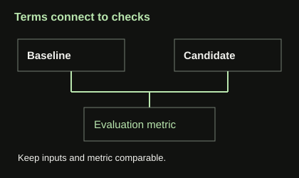

Terms in context
Follow a term from its definition to a worked example.
Glossary
Each term links to a prompt or lab that shows how to use it.


- acceptance-criteria
- Observable conditions that define a successful change. Example: Invoice: 300 cents less a 100-cent discount returns 217 cents. See use.
- ablation
- A comparison that removes or changes one component. Example: Sensor-only removes the badge while keeping its fitted threshold and test rows. See use.
- baseline
- A reference method used for comparison. Example: The training majority label is the benchmark baseline. See use.
- checkpoint
- Saved task state that supports safe restart. Example: The queue workflow stores a stage, call count, and input fingerprint. See use.
- data-shift
- A change in input patterns between fit and use. Example: The badge-label match falls from 0.96 to 0.12 in the shifted split. See use.
- evidence
- An artifact or observation that supports a claim. Example: The CSV rows support the queue count. See use.
- evaluation
- A defined test of a system against inputs and grading rules. Example: The benchmark reports correct predictions out of 100 per split. See use.
- fingerprint
- A stable digest used to detect changed input or configuration. Example: A changed CSV should not reuse a checkpoint tied to the old bytes. See use.
- handoff
- A record that lets another person continue the work safely. Example: After a write timeout, inspect state and draft before restart. See use.
- idempotence
- A repeat operation that does not create a second effect. Example: A queue workflow restart leaves a verified draft unchanged. See use.
- leakage
- Information from evaluation data affects training or choices. Example: Using shifted test labels to select a rule leaks the test result. See use.
- metric
- A defined number used to measure an outcome. Example: Accuracy is correct predictions divided by evaluated rows. See use.
- prompt repair
- A change that makes an ambiguous instruction testable. Example: Replace “handle edge cases” with exact inputs and expected results. See use.
- regression test
- A test that prevents a fixed defect from returning. Example: A 200-cent subtotal must still produce 217 cents at 8.25 percent. See use.
- source citation
- A pointer from a claim to the record that supports it. Example: The queue draft lists row IDs beside each count. See use.
- stop condition
- A rule that ends work when safe progress is not possible. Example: Stop before delivery when the input fingerprint changes. See use.
- verification
- A check that confirms an output meets its stated rule. Example: Recompute queue counts from status and age fields. See use.
Related material: invoice service, benchmark, and support report.